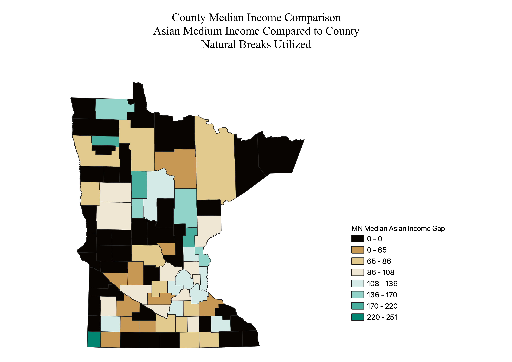

Homework 8: Census Data Comparisons
David Biele
These are choropleths of Median Income Gaps, by Race, per County in Minnesota. The Projection is 26792, which is for central Minnesota. Stretching on counties in the northern portion of the state is visible. Data was obtained from the US Census and is based on the American Community Survey Results. Data displays the percentage difference of the reported median income of the county. Rural counties lacked complete data and have a higher margin of error. Some median income data could not be obtained for some groups. The group median income by county was devided by the median income by county and then multiplied by 100 in order to show a simple percentage of median income gaps by county. Incomplete data was omitted.

Pretty Breaks was utilized in order to highlight the areas that had a more prominent deviation from the expected value. Color scale of Yellow to Green was used to show the shift from below to at median to above median.

Equal Interval was used to show the greater variation per county in income gaps. Purple to orange color scale was used to accentuate the above median areas.

Natural Breaks was utilized because it provided the clearest distinction between areas of disparity. Brown to Green help highlight the below, median, and high counties. The blacked out ares show counties that lacked data collection.
Overall these three maps show the wide range in median income disparity found in the counties. Due to the variation of median income, different modes were applied to the data in order to differentiate some of the data. Utilizing contrasting colors in the schemes allowed for highlighting the different regioms of below, median, and above. Comparing Median county income to specific groups highlighted some of the disparity by region. Limitations of demographics of the state show from map 1 to map three. White median income tracks closely to county while Asian median income is incomplete in many counties and may show that the overall data collected for all the counties may not be accurate. Unreported data was set to 0 in order to allow for all counties to be analyzed
Data used for this project
CSV dataset
Link to Map 1 geoJSON
Link to Map 2 geoJSON
Link to Map 3 geoJSON